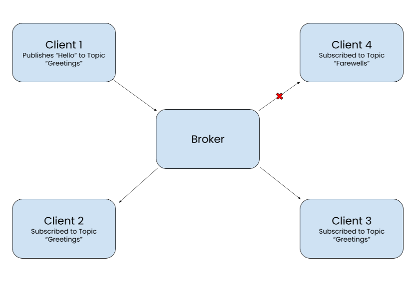

Implementing a MQTT Server Between ESP32 and Rasperry Pi
- Posted on March 22, 2024
- Topics: Arduino, ESP32, Raspberry Pi, MQTT

When I first started to build my MQTT system on the Raspberry Pi a couple months ago, I went into it being optimistic that I could quickly set it up; after all, with the countless tutorials and well-documented libraries on the MQTT protocol, how lost could I possibly get?
The answer: very lost. While the information that I sought did exist on the Web, I realized that all the configuration and setup can be a bit disjointed from Wikis to websites. Therefore, I decided to compile all my links and experiences towards building an MQTT system into a single place, here, so that the readers can have an easier time getting MQTT to work.
This blog will first go over the basics of MQTT, which includes an explanation of the overall system, some helpful terminology, as well as useful websites that I've found for further reference. Then, we'll build our own MQTT system between a Raspberry Pi and ESP32C3 microcontrollers so that you can get some hands-on experience.
The MQTT Protocol, which stands for Message Queueing Telemetry Transport, is a lightweight communication protocol that's designed to help bandwidth-constrained devices communicate with one another wirelessly.
The protocol has two main groups of participants, a Broker and a Client. In this system, the client can either publish or subscribe to messages from the broker, with each message being assigned a single Topic. Once the broker recieves a message published from a client along with an attached topic, it will then redistribute the message to all clients subscribed to said topic.
In the example above, after Client 1 publishes "Hello" to the Broker with a topic "Greetings", the Broker will send that message to both Client 2 and 3 who are subscribed to the topic "Greetings", but not Client 4 who is subscribed to the topic "Farewells".
A key thing to note here is that no client in the MQTT Protocol directly communicates with another client. Because clients are only sending and recieving messages from the broker, the only connection a client needs to maintain is the one between the broker and the client itself. This holds true whether there is 1 subscribed client or 100 subscribed clients, which greatly simplifies the overall network topology.
Furthermore, after reducing the MQTT network to just a bunch of client-broker connections, you can customize each individual connection with a wide-array of options/features, a big one being Quality-of-Service or QoS levels. The QoS level assigned to each message in a client-broker connection dictates whether a message will only be sent once (QoS O), will be recieved at least once (QoS 1), or recieved only once (QoS 2). I won't be going further into these customizations since this is as far as my example will go, but feel free to read more about them here at HiveMQTT.
Now that we understand the basics of the MQTT Protocol, lets starting building one by configuring the Broker that will be running on the Raspberry Pi.